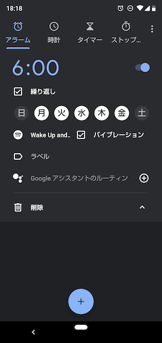
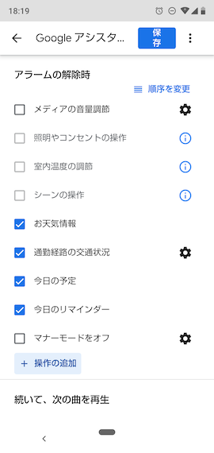
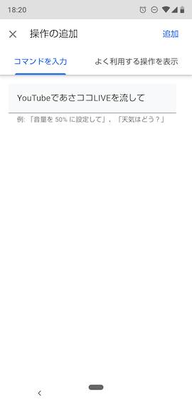

朝起きられないたつのこでもあさココをLiveで見る方法
2020-02-27 11:43:56 +0900 JST
世の中にはあさココLIVEという危険ドラッグものがあってですね。
この動画を作っているのが桐生ココというVTuberさんなのですが、私はそれはもう見事にハマってしまいました。
キレッキレの龍が如く実況からの超コミュニケーション&圧倒的メンタルによって取材が行われるあさココ、しかもマルチリンガル。
劇薬なので切り抜き動画から入ったほうが体に優しいかもしれない。
さてあさココの話に戻ると、この動画なんと朝の6時からLiveで放送されるという番組です。
桐生ココのファン、通称「たつのこ」は当然この動画をみる義務を負うわけですが、それにしても朝起きられないたつのこが非常に多いです。
そこで朝きちんと起きられてあさココをリアルタイムで見れる仕組みを考えました。
用意するもの
- Androidスマートフォン
設定
まず時計アプリを開きます。アラームを新規で追加します。時間は6時、あさココは平日放送なので繰り返しを平日に設定します。

ここで下の方に Googleアシスタントのルーティン という項目があります。これを選択してください。

+ 操作の追加 を選択します。

ここで「YouTubeであさココLIVEを流して」と入力します。最後に追加して保存すれば完了です。
Googleアシスタントとは
で、このGoogleアシスタントですが、iPhoneのSiriのようなものです。AndroidではGoogleアシスタントをアラームの後に実行することができます。
上のように設定することで、まずアラームが鳴り、その後Googleアシスタントが今日1日の天気情報などを読み上げた後、YouTubeアプリを起動して自動的に動画再生まで進めてくれます。
最近あさココでは天気予報がないので、Googleアシスタントに代わりに教えてもらうことができます。
私がこの設定をして3日立ちますが、2日はうまくいったものの、1日はARKの動画に飛んでしまいました。まぁARKでも起きられたので問題ないでしょ
この生活を始めてから無理なく朝6時に起きれるようになりました！
えっ、二度寝の心配はないか？
朝6時からあの声流されたら誰だって起きるでしょ？そういうことです☺️
注意
Chromecastが自宅にある場合はChromecastに優先して再生しようと試みます。家族みんなで見るテレビにChromecastが挿してあるといきなりリビングからあさココLIVEが流れます。より緊張感のある朝を迎えたいたつのこにおすすめ。